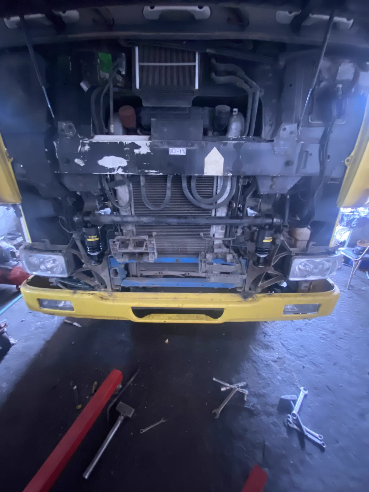
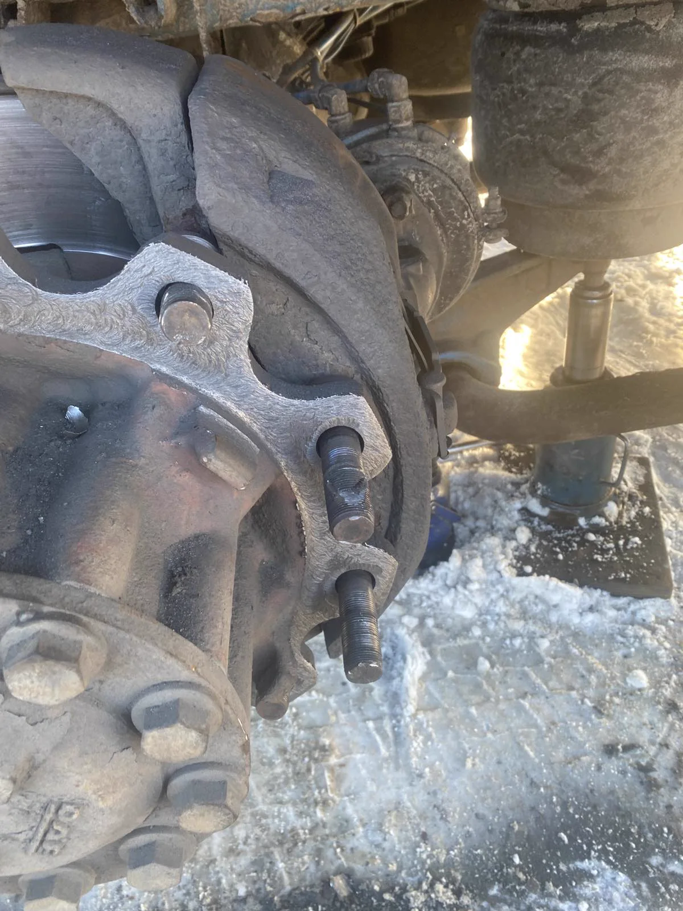
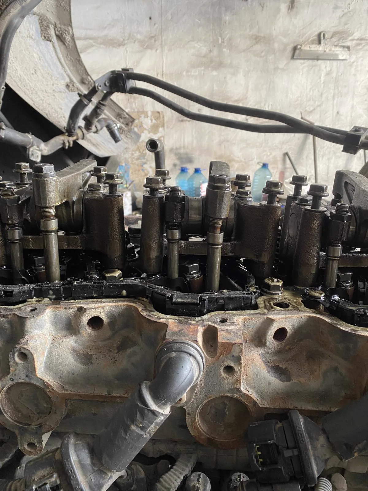

Ремонт вантажних автомобілів і тягачів
Проводимо роботи з вантажними автомобілями і тягачами після уточнення стану техніки. Пріоритет - повернути автомобіль у роботу без зайвих обіцянок і непідтверджених строків.
ЗателефонуватиРемонтуємо вантажні автомобілі, тягачі, причепи, напівпричепи та спецтехніку. Ціни і точний обсяг робіт визначаються після огляду або діагностики.

Проводимо роботи з вантажними автомобілями і тягачами після уточнення стану техніки. Пріоритет - повернути автомобіль у роботу без зайвих обіцянок і непідтверджених строків.
Зателефонувати
Ремонтуємо причепи і напівпричепи, узгоджуємо перелік робіт після огляду. Працюємо з приватними клієнтами, компаніями та автопарками.
Зателефонувати
Виконуємо ремонт ходової частини, двигунів, гідропідсилювачів керма та компресорів. Можливість конкретних робіт визначається після діагностики.
Написати у ViberТермінові звернення приймаються телефоном. Можливість виїзду і ремонту на місці погоджується після уточнення несправності, місця поломки та типу транспорту.
Зателефонуйте або надішліть фото несправності у Viber. Ми уточнимо, чи виконуємо потрібні роботи, і погодимо подальші дії.
Для швидшого уточнення підготуйте марку, модель, тип транспорту та короткий опис несправності.
Ні. Вартість залежить від стану техніки, деталей і обсягу робіт, тому погоджується після огляду.
Так, СТО працює з компаніями та автопарками за індивідуально погодженими умовами.
Можливість ремонту інших марок уточнюйте телефоном.